Direction 01
Jamun
Own the colour nobody on the road owns.
The safest bold move. Premium, easy to scale to every touchpoint, and the yellow badge glows on it.
बड़े काम की जगह A place for big work

Own the colour nobody on the road owns.
The safest bold move. Premium, easy to scale to every touchpoint, and the yellow badge glows on it.
बड़े काम की जगह A place for big work
Every competitor board on the Hapur-Modinagar road is built from the same four colours: navy, gold, red and white. Violet is nowhere on that road, and nowhere in the fields around it. Jamun takes that empty colour and makes it IIP's, the way purple belongs to Cadbury or blue belongs to Kofi Kafi. Your logo is a yellow sun badge, and yellow against violet is a complementary pair, so the rosette does not just sit on the board, it glows.
Two pieces borrowed from the logo itself. The Sunburst: rays that radiate from the rising sun of the logo across any surface, drawn in a lighter violet at 7 percent. The Diamond Frieze: a band of the red diamonds from the rosette's border on a yellow strip, used as a base line on boards, walls and documents. Neither is new artwork, so nothing competes with the logo.
Calm authority. Short declarative lines, Hindi first, English name. No exclamation marks, no prices, no promises that need approval.
Best for: Brand-building over 3 to 5 years, investor and factory-owner trust, a single identity across every touchpoint.
The supplied rosette is used exactly as drawn. Only the white page, the faint die-cut outline and a '1/1' screenshot marker were removed to make a transparent master. Please supply the original vector (CDR or AI) before any large print.
Primary. The full-colour badge, on the direction's own field. The only version used on boards.
Clear space. Keep a margin of one-tenth of the badge width on every side (the red dashed line). On pole boards, never less than 5 percent of the board width.
Minimum size. 24 px on screen, 18 mm in print. On a pole board the badge is never below 45 percent of the board width.
Usage balance. CMYK values are mathematical approximations; approve a printed proof before the run.
CIEDE2000 colour difference between Jamun violet and the dominant colours measured in your field photographs. Above about 20 is clearly different; above 40 is unmistakable.
| Measured against | Distance | |
|---|---|---|
| Roadside foliage | 45.7 | |
| Concrete and dust | 43.7 | |
| Hazy sky | 54.1 | |
| Shri Balaji (blue board) | 32.5 | |
| Shri Balaji (red board) | 31.7 | |
| Shri Haridas (SHD) | 23.4 | |
| Shivansh | 25.0 |
| white on violet | 10.4:1 |
| yellow on violet | 8.8:1 |
4.5:1 is the accessibility benchmark for body text and 3:1 for large display text.
Teko 700 uppercase, tight leading .9
Hind 500 to 700
| Line | Use |
|---|---|
| बड़े काम की जगह | A place for big work (primary) |
| यहीं से शुरू | Start right here |
| Build big. Start here. | English secondary |
| अपना कारखाना, अपना पता | Your factory, your address |
| Isapur ka naya udyog pata | Hinglish for social |
Artwork is sized for a board that is as wide as the pole face (about 10 inches). Print masters are 300 dpi at actual size. Add 3 mm bleed at production.
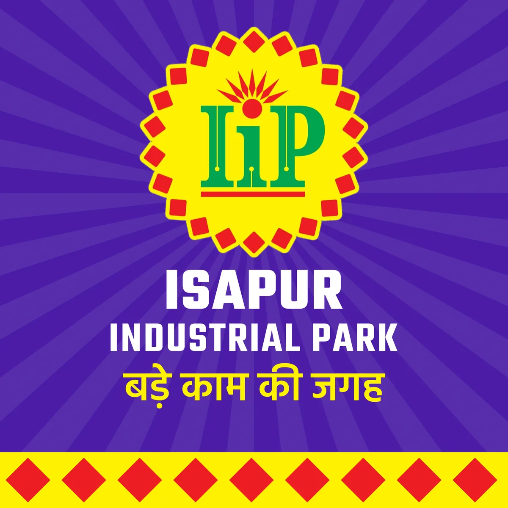
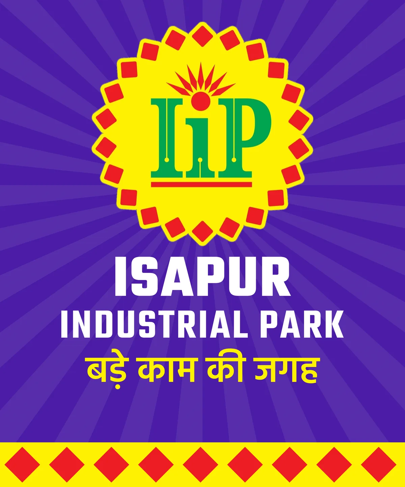
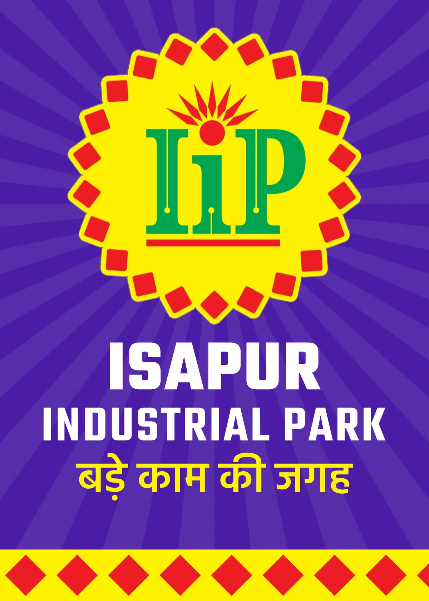
These are your own photographs from the Sarawa stretch of the Modinagar-Hapur road. The IIP board is the exact artwork placed at true scale.
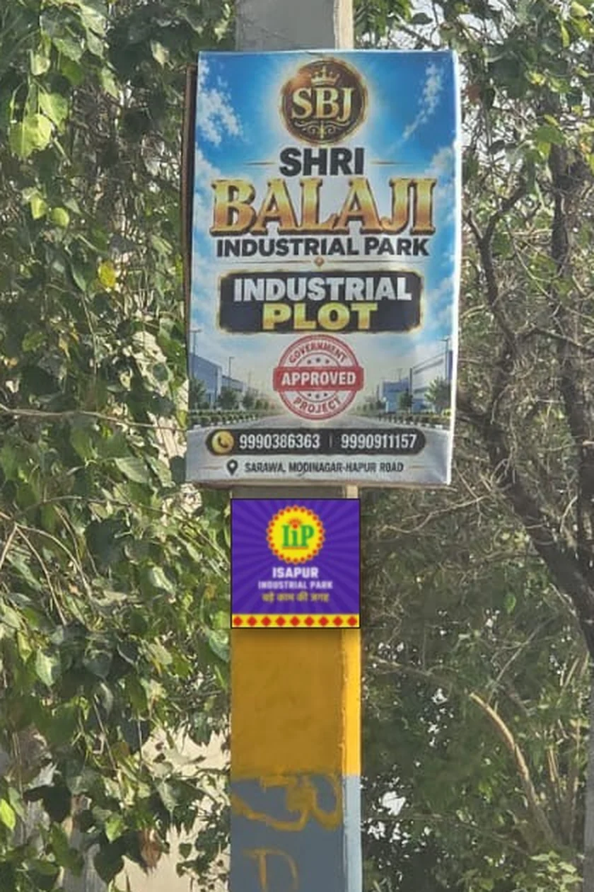
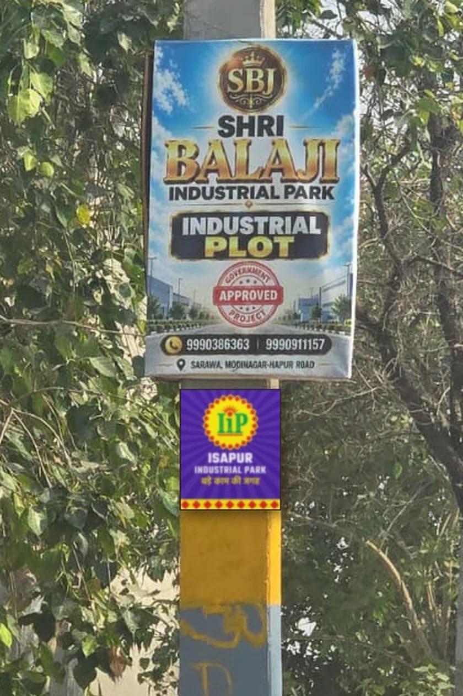
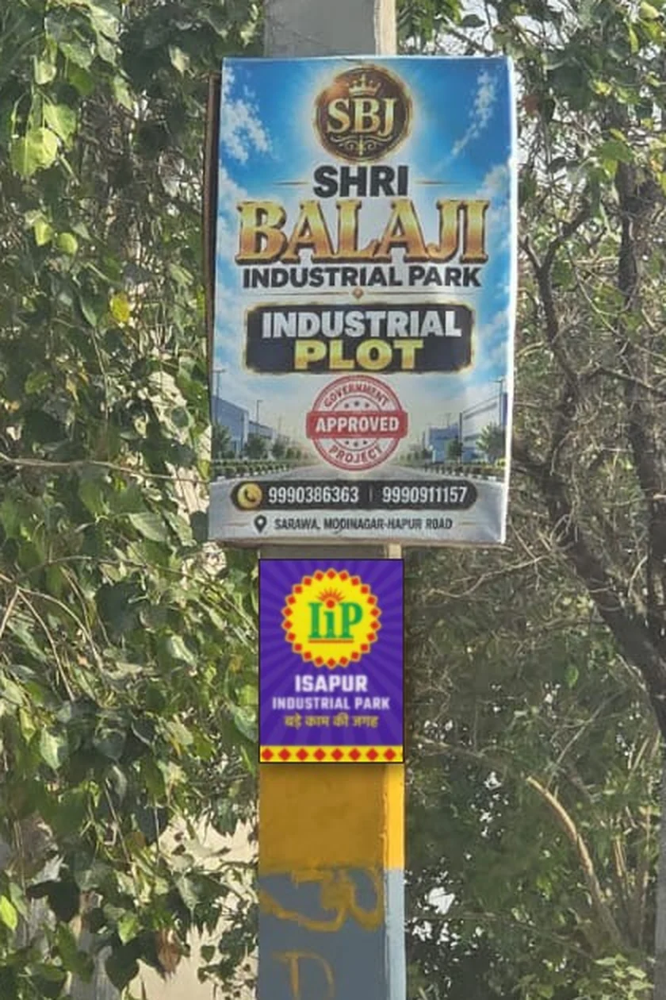
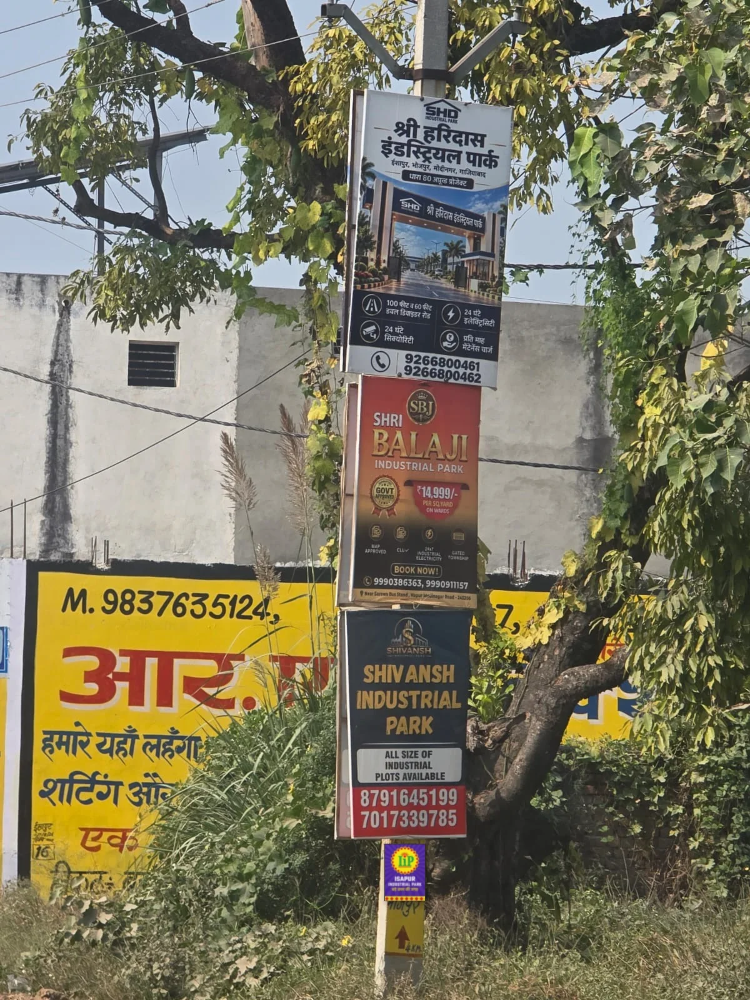
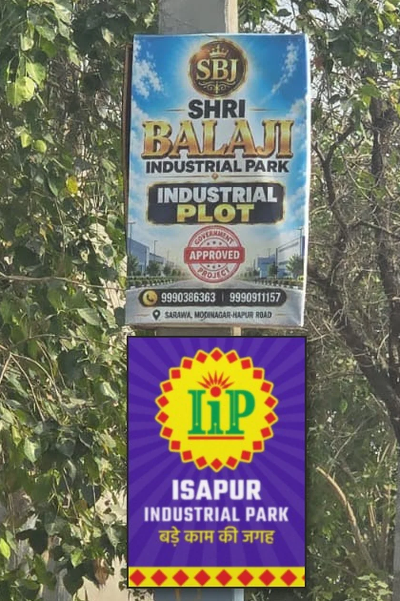
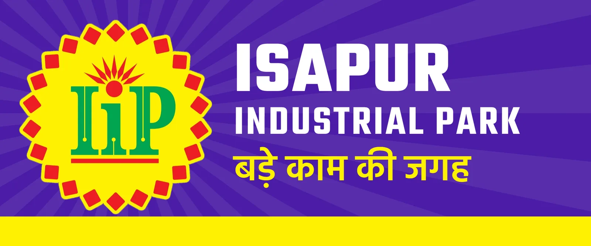
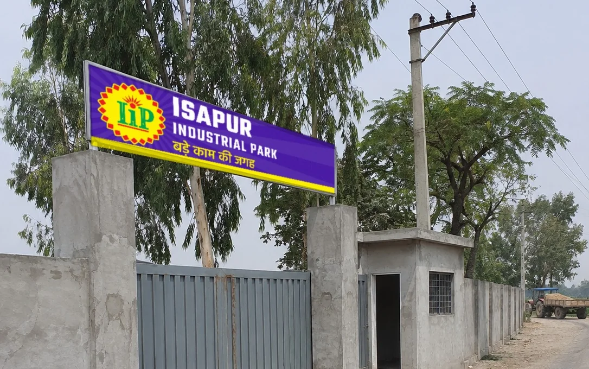
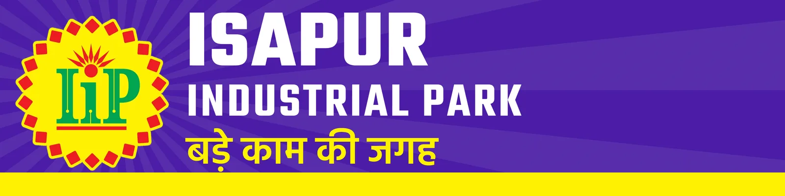
Director, Isapur Industrial Park
98XXX XXXXX
sales@your-domain.in
Hapur-Modinagar Road, Yusufpur Isapur, Ghaziabad, UP 201022
Directional signs at the Bhojpur junction and the Modinagar junction. Distances are examples to be measured on the ground.